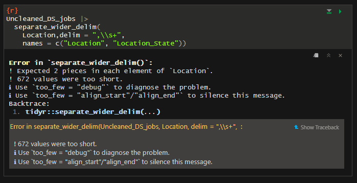

Rows: 672 Columns: 15
── Column specification ────────────────────────────────────────────────────────
Delimiter: ","
chr (12): Job Title, Salary Estimate, Job Description, Company Name, Locatio...
dbl (3): index, Rating, Founded
ℹ Use `spec()` to retrieve the full column specification for this data.
ℹ Specify the column types or set `show_col_types = FALSE` to quiet this message.
Let’s start by investigating our dataset a little bit, by getting a glimpse and see the structure of the data:
index Job Title Salary Estimate Job Description
Min. : 0.0 Length:672 Length:672 Length:672
1st Qu.:167.8 Class :character Class :character Class :character
Median :335.5 Mode :character Mode :character Mode :character
Mean :335.5
3rd Qu.:503.2
Max. :671.0
Rating Company Name Location Headquarters
Min. :-1.000 Length:672 Length:672 Length:672
1st Qu.: 3.300 Class :character Class :character Class :character
Median : 3.800 Mode :character Mode :character Mode :character
Mean : 3.519
3rd Qu.: 4.300
Max. : 5.000
Size Founded Type of ownership Industry
Length:672 Min. : -1 Length:672 Length:672
Class :character 1st Qu.:1918 Class :character Class :character
Mode :character Median :1995 Mode :character Mode :character
Mean :1636
3rd Qu.:2009
Max. :2019
Sector Revenue Competitors
Length:672 Length:672 Length:672
Class :character Class :character Class :character
Mode :character Mode :character Mode :character
From both glimpse() and summary() outputs, we can see that, categorical variables are in character form. We will investigate them one by one later on.
But first, let’s change the column names that have blank spaces so that it will be much easy to make the analyses later.
index Job_Title Salary_Estimate Job_Description
Min. : 0.0 Length:672 Length:672 Length:672
1st Qu.:167.8 Class :character Class :character Class :character
Median :335.5 Mode :character Mode :character Mode :character
Mean :335.5
3rd Qu.:503.2
Max. :671.0
Rating Company_Name Location Headquarters
Min. :-1.000 Length:672 Length:672 Length:672
1st Qu.: 3.300 Class :character Class :character Class :character
Median : 3.800 Mode :character Mode :character Mode :character
Mean : 3.519
3rd Qu.: 4.300
Max. : 5.000
Size Founded Type_of_Ownership Industry
Length:672 Min. : -1 Length:672 Length:672
Class :character 1st Qu.:1918 Class :character Class :character
Mode :character Median :1995 Mode :character Mode :character
Mean :1636
3rd Qu.:2009
Max. :2019
Sector Revenue Competitors
Length:672 Length:672 Length:672
Class :character Class :character Class :character
Mode :character Mode :character Mode :character
From our summary, we can also see some strange values are present in the data. For instance there are some rows marked as “-1” in the Headquarters, Founded.
Investigating the Columns
Let’s investigate the columns one by one:
Index
Index column is not necessary for us, so we will remove it from our data set.
Uncleaned_DS_jobs$index <-NULL
Rating
We realized that from the summary, Rating has a minimum value as -1, but the rating should be between 1 to 5.
We need to fix that problem.
To fix this, first we need to look how many data are there with Rating = -1:
sum(Uncleaned_DS_jobs$Rating ==-1)
[1] 50
We have 50 values with Rating = -1.
And after looking in a more detailed way, we realize that the foundation year of the companies have a value -1 also we need check for them
sum(Uncleaned_DS_jobs$Founded ==-1)
[1] 118
And we can look how many rows have -1 foundation year and -1 rating:
No information
501
Roche, GlaxoSmithKline, Novartis
10
Leidos, CACI International, Booz Allen Hamilton
6
Los Alamos National Laboratory, Battelle, SRI International
6
Battelle, General Atomics, SAIC
3
(Other)
146
San Francisco, CA New York, NY Washington, DC Boston, MA
69 50 26 24
Chicago, IL (Other)
22 481
In the Location variable, we can see that they are written with the state which they are in. So we want to separate them. For this, we can use separate_wider_delim() function.
But, we receive an error here.

From the error, we can see that some rows are too short. Let’s see that columns:
# A tibble: 7 × 1
Location
<chr>
1 Remote
2 United States
3 Utah
4 New Jersey
5 Texas
6 Patuxent, Anne Arundel, MD
7 California
From this output, we can see that we have “Remote”, “United States”, locations that have the same names as their states; “Utah”, “New Jersey”, “Texas” and “California”, and “Patuxent, Anne Arundel, MD” which is a region for the Anne Arundel county. So, we will add information for this columns firstly, then we will separate the Location and States. For this, we will use str_replace() function.
# Define replacements using case_whenUncleaned_DS_jobs <- Uncleaned_DS_jobs %>%mutate(Location =case_when( Location =="Remote"~str_replace(Location, "Remote", "Remote, Remote"), Location =="United States"~str_replace(Location, "United States", "United States, United States"), Location =="Utah"~str_replace(Location, "Utah", "Utah, Utah"), Location =="New Jersey"~str_replace(Location, "New Jersey", "New Jersey, New Jersey"), Location =="Texas"~str_replace(Location, "Texas", "Texas, Texas"), Location =="California"~str_replace(Location, "California", "California, California"), Location =="Patuxent, Anne Arundel, MD"~str_replace(Location, "Patuxent, Anne Arundel, MD", "Anne Arundel, MD"),TRUE~ Location ) )
-1 College / University
27 3
Company - Private Company - Public
397 153
Contract Government
2 10
Hospital Nonprofit Organization
1 36
Other Organization Private Practice / Firm
5 4
Self-employed Subsidiary or Business Segment
2 28
Unknown
4
Salary Estimation
For Salary Estimate column, let’s see the unique values we have:
From this output, we can see that we have common shape for the salary estimates with 0 NA values. We can separate this column into two separate columns for obtaining lower and upper limits for the salary estimates.
# Remove spaces in the column Uncleaned_DS_jobs$Salary_Estimate_wo_spaces <- Uncleaned_DS_jobs$Salary_EstimateUncleaned_DS_jobs$Salary_Estimate_wo_spaces <-gsub(" ", "",Uncleaned_DS_jobs$Salary_Estimate) # Display the updated data frame head(Uncleaned_DS_jobs$Salary_Estimate_wo_spaces)
By using separate_wider_regex() function, we defined the pattern in the data, and we got the new columns as Low_Limit_For_Salary and High_Limit_For_Salary as we wished.
[1] "(Sr.) Data Scientist -"
[2] "AI Data Scientist"
[3] "AI Ops Data Scientist"
[4] "AI/ML - Machine Learning Scientist, Siri Understanding"
[5] "Analytics - Business Assurance Data Analyst"
[6] "Analytics Manager"
But before that, we can see that some columns have “Senior”, “Manager” words. By using this information, we can create a new column for seniority of the job.
By using str_view() function, first, let’s see that columns;
[1] │ <Sr> Data Scientist
[16] │ <Experience>d Data Scientist
[34] │ <Senior> Research Statistician- Data Scientist
[40] │ <Senior> Analyst/Data Scientist
[47] │ <Senior> Data Scientist
[57] │ <Senior> Data Scientist
[93] │ <Senior> Data Scientist
[99] │ <Senior> Data Scientist
[104] │ <Senior> Data Scientist
[107] │ <Sr> Data Engineer (Sr BI Developer)
[122] │ <Senior> Data Engineer
[123] │ <Senior> Data Scientist
[126] │ <Sr>. ML/Data Scientist - AI/NLP/Chatbot
[130] │ <Sr>. ML/Data Scientist - AI/NLP/Chatbot
[132] │ <Senior> Data Engineer
[137] │ <Senior> Data Engineer
[143] │ <Senior> Data Scientist
[154] │ <Sr> Scientist - Extractables & Leachables
[156] │ <Sr> Data Scientist
[158] │ <Experience>d Data Scientist
... and 51 more
By using str_detect() function, we can detect the rows including “Senior”, “Sr”, “Experienced”, “Manager” words. This function returns TRUE if they exist, and returns FALSE if they don’t exist.
By using as.integer() , we assign 1 to exists and 0 to nonexistent.
[86] │ <Data Science Manager, Payment Acceptance - USA>
[150] │ <Analytics Manager>
[198] │ <Principal Scientist/Associate Director, Quality Control and Analytical Technologies>
[218] │ <Analytics Manager - Data Mart>
[266] │ <Director of Data Science>
[272] │ <Manager / Lead, Data Science & Analytics>
[313] │ <Principal Scientist/Associate Director, Quality Control and Analytical Technologies>
[332] │ <Principal Data & Analytics Platform Engineer>
[343] │ <VP, Data Science>
[381] │ <Analytics Manager - Data Mart>
[470] │ <VP, Data Science>
[523] │ <Manager, Field Application Scientist, Southeast>
[564] │ <Data Science Manager>
[581] │ <Vice President, Biometrics and Clinical Data Management>
Let’s replace them with “Data Science and Analytics Manager”
Uncleaned_DS_jobs$Job_Title <-str_replace_all( Uncleaned_DS_jobs$Job_Title,".*Analytics\\s+Manager.*|.*Data\\s+Science\\sManager.*|.*Director.*|.*Vice\\sPresident.*|.*VP.*|.*Principal.*|.*Manager.*","Data Science and Analytics Manager")
Now, bu using str_view() function, we want to see all the jobs that have “Data” in it, but not “Data Analyst”, “Data Scientist,”Data Engineer” or “Data Science and Analytics Manager” because we already took care of that titles.
[14] │ <Data Modeler>
[24] │ <Business Intelligence Analyst I- Data Insights>
[56] │ <Data Analytics Engineer>
[97] │ <Data Analytics Engineer>
[117] │ <Software Engineer - Data Science>
[141] │ <Data Integration and Modeling Engineer>
[187] │ <Production Engineer - Statistics/Data Analysis>
[207] │ <Data Science Instructor>
[214] │ <Data Science Software Engineer>
[219] │ <Data Modeler (Analytical Systems)>
[230] │ <Equity Data Insights Analyst - Quantitative Analyst>
[257] │ <Environmental Data Science>
[370] │ <Data Science Software Engineer>
[382] │ <Data Modeler (Analytical Systems)>
[388] │ <IT Partner Digital Health Technology and Data Science>
[396] │ <Data Solutions Engineer - Data Modeler>
[519] │ <Data Science Software Engineer>
[540] │ <Data Science Analyst>
[545] │ <Data Modeler (Analytical Systems)>
[555] │ <IT Partner Digital Health Technology and Data Science>
... and 3 more
We will save these as “Other Data Positions”
Uncleaned_DS_jobs$Job_Title <-str_replace_all( Uncleaned_DS_jobs$Job_Title,regex("(?!Data\\s+(Analyst|Scientist|Engineer|Science\\s+and\\s+Analytics\\s+Manager)).*Data.*"),"Other Data Positions" )
Finally, we will save all the jobs that are not include “Data” word in it and not “Machine Learning Engineer” into “Others” category because there are a lot of jobs with the titles like Scientist, Researcher etc.
Data Analyst Data Engineer
47 47
Data Science and Analytics Manager Data Scientist
14 455
Machine Learning Engineer Other Data Positions
36 23
Others
50
Job Description
When we look at the job description column,
We have so many different values but we can differentiate them into other columns like we can say that a job wants the skill SQL.
First, we need to look the job description column in a detailed way.
view(Uncleaned_DS_jobs$Job_Description)
We see some common requirements and common job descriptions for jobs.
For this we can separate the columns like SQL and we can say that this jobs wants an SQL bu using factor 1 or 0.
Let’s start with SQL:
In this we should check if SQL is mentioned in the variable Job_Description
sql_mentioned <-function(description) {# We use tolower to match the SQL in the job description description <-tolower(description)# Check if SQL is mentionedif (grepl("\\bsql\\b", description)) {return(1) } else {return(0) }}
Now we need to create a column called SQL, in this column we will see if SQL is a requirement in the job description or not.
python_mentioned <-function(description) {# We use tolower to match the python in the job description description <-tolower(description)# Check if python is mentionedif (grepl("\\bpython\\b", description)) {return(1) } else {return(0) }}
excel_mentioned <-function(description) {# We use tolower to match the excel in the job description description <-tolower(description)# Check if excel is mentionedif (grepl("\\bexcel\\b", description)) {return(1) } else {return(0) }}
hadoop_mentioned <-function(description) {# We use tolower to match the hadoop in the job description description <-tolower(description)# Check if hadoop is mentionedif (grepl("\\bhadoop\\b", description)) {return(1) } else {return(0) }}
spark_mentioned <-function(description) {# We use tolower to match the spark in the job description description <-tolower(description)# Check if spark is mentionedif (grepl("\\bspark\\b", description)) {return(1) } else {return(0) }}
aws_mentioned <-function(description) {# We use tolower to match the AWS in the job description description <-tolower(description)# Check if AWS is mentionedif (grepl("\\baws\\b", description)) {return(1) } else {return(0) }}
tableau_mentioned <-function(description) {# We use tolower to match the Tableau in the job description description <-tolower(description)# Check if Tableau is mentionedif (grepl("\\btableau\\b", description)) {return(1) } else {return(0) }}
bigdata_mentioned <-function(description) {# We use tolower to match the Big data in the job description description <-tolower(description)# Check if Big data is mentionedif (grepl("\\bbig-data\\b", description)) {return(1) } else {return(0) }}
numpy_mentioned <-function(description) {# We use tolower to match the Numpy in the job description description <-tolower(description)# Check if Numpy is mentionedif (grepl("\\bnumpy\\b", description)) {return(1) } else {return(0) }}
ML_mentioned <-function(description) {# We use tolower to match the ML in the job description description <-tolower(description)# Check if ML is mentionedif (grepl("\\bmachine learning\\b", description)) {return(1) } else {return(0) }}
DL_mentioned <-function(description) {# We use tolower to match the DL in the job description description <-tolower(description)# Check if DL is mentionedif (grepl("\\bdeep learning\\b", description)) {return(1) } else {return(0) }}
stat_mentioned <-function(description) {# We use tolower to match the statistics in the job description description <-tolower(description)# Check if statistics is mentionedif (grepl("\\bstatistics\\b", description)) {return(1) } else {return(0) }}
Wickham, H., Çetinkaya-Rundel, M., & Grolemund, G. (2023). R for Data Science: Import, Tidy, transform, visualize, and model data. O’Reilly Media, Inc.